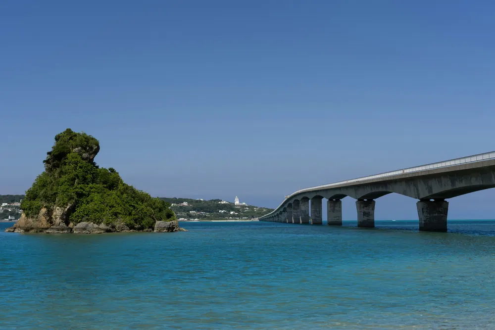
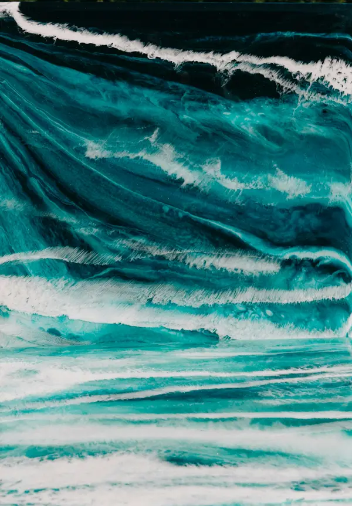
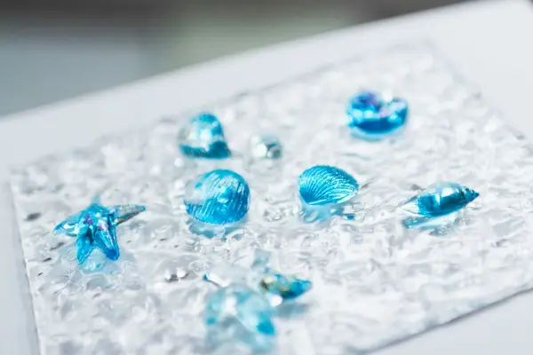
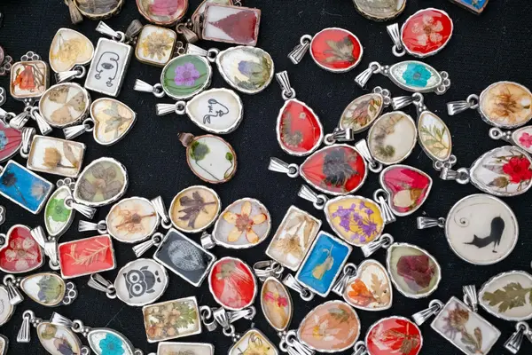
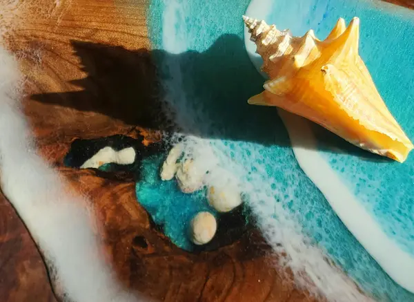
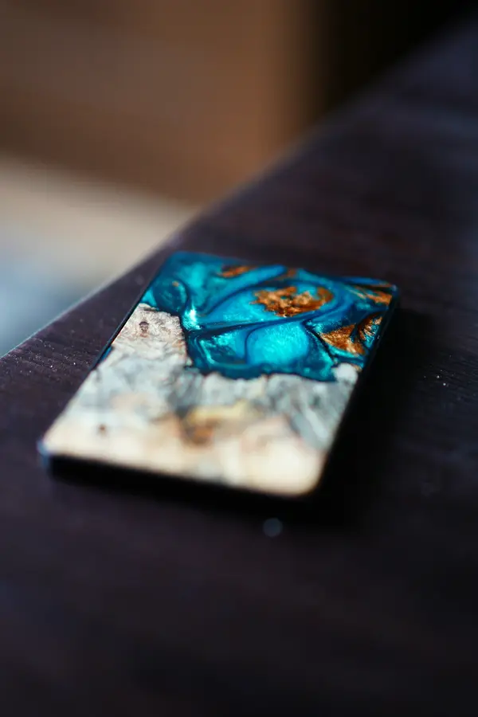
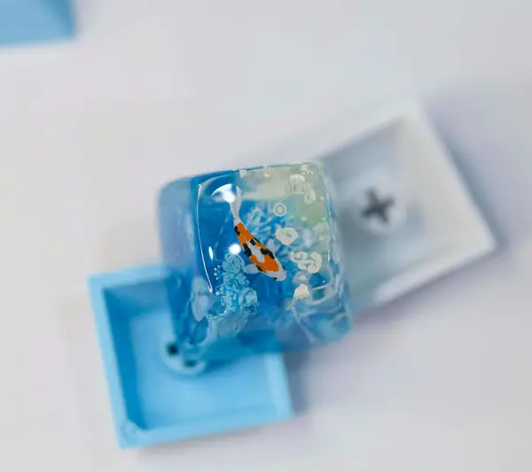
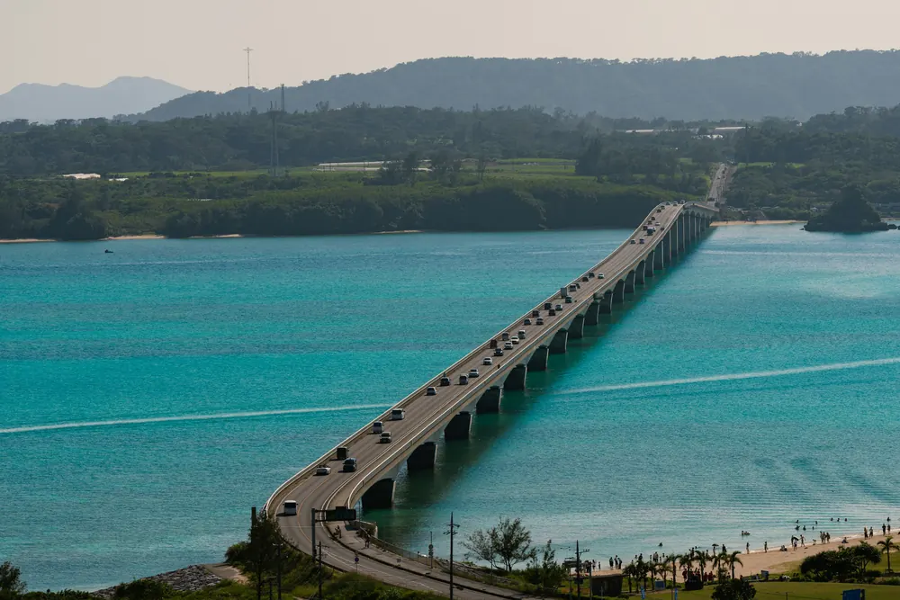

沖縄県名護市 ・ 羽地の駅 2階 ・ 海が見えるレジンアート工房
名護の海を、
レジンにとじこめて。
羽地内海・屋我地島・古宇利島を望む、海が見えるレジンアート工房「うみないび」。作品の制作のご依頼、体験教室、オンラインショップ。お子さまスペースもあるので、お子さま連れでもゆっくり楽しんでいただけます。
- 制作のご依頼
- 体験教室
- オンラインショップ
- お子さま連れOK
屋我地島周辺の海（名護市）（写真：Leopold / Unsplash（新しいタブで開きます））
What we do
うみないびで、できること
つくってもらう、自分でつくる、おうちで選ぶ。3つの方法で、名護の海の色をお届けします。

制作のご依頼
新築のお祝いのアートパネル、結婚式の小物、記念の品など。ご希望をうかがって、世界にひとつの作品をおつくりします。

体験教室
コースター、プレート、アクセサリー。6歳から参加できるコースもあります。少人数・予約制、手ぶらでどうぞ。

オンラインショップ
お店の作品を、全国へお届けします。カード・コンビニ払いに対応。沖縄の旅の思い出やお土産にも（ただいま準備中です）。
このページの作品の写真はフリー素材（Unsplash）のイメージで、当店の作品ではありません。お店の作品の写真は、準備ができしだい差し替えます。
Works
名護の海の色を、ひとつずつ。
透明なレジンを何層にも重ね、白波はひとつずつ手で描きます。同じ波は、ふたつとありません。



写真：Maryna Yazbeck（新しいタブで開きます）、gretta vosper（新しいタブで開きます）、sooji min（新しいタブで開きます）、Adrian Swancar（新しいタブで開きます）、Hiros Lee（新しいタブで開きます）、Tolga deniz Aran（新しいタブで開きます）（Unsplash・当店の作品ではありません）
Order made
あなただけの海を、
おつくりします。
思い出の浜の色、記念日の夕焼け、お部屋に合う大きさ。お話をうかがいながら、デザインから一緒に考えます。
- アートパネル
- テーブル・トレイ
- 結婚式・お祝いの小物
- アクセサリー
- お店のディスプレイ
- ご相談フォーム・LINE・Instagram、またはお店で。作りたいもの・大きさ・ご予算・ご希望の時期をお聞かせください。
- デザインとお見積り色の見本やイメージをお見せして、お見積りをお出しします。
- 制作レジンを何層にも重ねて、ひとつずつ手でつくります。大きさによって日数がかかります。
- お渡しお店でのお受け取り、または発送でお届けします。
Workshop
自分の手で、海をつくる。
色の混ぜ方から白波の描き方まで、ていねいにお伝えします。すべて予約制・1回4名までの少人数です。
オーシャンコースター体験6歳から
¥3,500（税込・材料費込み）
- 時間
- 60分
- 対象
- 6歳以上
- 受け取り
- 翌日・店頭
サンセットプレート体験
¥5,500（税込・材料費込み・送料別）
- 時間
- 90分
- 対象
- 10歳以上
- 受け取り
- 後日・郵送または店頭
マイジュエリー制作
¥4,500（税込・パーツ代・材料費込み）
- 時間
- 75分
- 対象
- 12歳以上
- 受け取り
- 当日お持ち帰り（UVレジン）
お支払いは事前です（ご予約を受け付けたあと、Stripe の請求書をメールでお送りします）。お客様のご都合によるキャンセルは、返金いたしかねます。
With kids
お子さま連れでも、安心して。
家族で旅の思い出をつくりたい方へ。お子さまスペースがあるので、小さなお子さまとご一緒でも、レジンアートにじっくり集中していただけます。
キッズ
スペースあり
店内にお子さまのスペースを用意しています。保護者の方は、作品づくりに集中していただけます。
見学
できます
保護者の方は、お子さまの体験をそばで見学できます。
6歳〜
参加できるコース
オーシャンコースター体験は6歳から。いちばん気軽な入門コースです。
4名
までの少人数
1回4名までなので、スタッフがお子さまの手元までしっかり見られます。
手ぶら
でOK
材料・道具はお店でご用意します。料金は材料費込みです。
予約制
で待たずに
時間を決めてご予約いただくので、着いてすぐに始められます。
レジンが服につくと落ちにくいため、汚れてもよい服装でお越しください。

The view
羽地の駅の2階で、
とっておきの眺めが
待っています。
沖縄県名護市の海が見える工房。2階のお店からは、おだやかな羽地内海と、屋我地島、その先の古宇利島まで見わたせます。目の前の海の色を見ながら、ゆっくり作品と向き合う時間をどうぞ。
- 羽地内海
- 屋我地島
- 古宇利島
写真は古宇利島から見た古宇利大橋のイメージです（写真：Leopold / Unsplash（新しいタブで開きます））
Online shop
おうちから、海のかけらを。
お店の作品をオンラインでお求めいただけます。沖縄県から、ゆうパックでお届けします。お支払いはクレジットカード・コンビニ払いです。
貝とヒトデのレジン小物
準備中押し花のペンダント
準備中小さな水の世界
準備中木とレジンのプレート
準備中※ 写真はイメージ（Unsplash）で、販売中の商品・当店の作品ではありません。
Q&A
よくある質問
Q. うみないびはどこにありますか？
沖縄県名護市真喜屋763番地1、「羽地の駅」の2階にあるレジンアートの工房・お店です。名護市街から屋我地島・古宇利島や、やんばるへ向かう途中にあります。駐車場は羽地の駅の駐車場をご利用ください。
Q. 工房から海は見えますか？
はい。2階の工房からは、おだやかな羽地内海と屋我地島、その先の古宇利島まで見わたせます。海を眺めながら、レジンアートの体験や作品づくりができます。
Q. レジンアート体験は予約が必要ですか？料金は？
体験教室はすべて予約制で、1回4名までの少人数です。料金は3,500円〜5,500円（税込・材料費込み）、時間は60〜90分のコースがあります。ご予約はお問い合わせフォーム・LINE・Instagram から受け付けています。
Q. 子どもも参加できますか？
オーシャンコースター体験は6歳から参加できます。店内にお子さまスペースがあり、保護者の方はお子さまの体験をそばで見学できます。
Q. 雨の日でも体験できますか？
体験は建物の中（羽地の駅の2階）で行うので、雨の日でも参加できます。台風で公共交通機関が運休したときの取り扱いは、体験教室のページをご覧ください。
Q. オーダーメイドの作品をつくってもらえますか？
はい。アートパネル、テーブル・トレイ、結婚式やお祝いの小物、アクセサリー、お店のディスプレイなどの制作をお受けしています。ご希望をうかがってお見積りをお出しします。
Visit
お店のご案内
- 店名
- うみないび（Uminaibi）
- 所在地
- 〒905-1143
沖縄県名護市真喜屋763番地1
羽地の駅 2階 - 営業時間
- 10:00 - 18:00
体験教室は事前のご予約が必要です - 定休日
- 不定休（ホームページ・SNSでお知らせ）
- 電話番号
- 050-7116-0133
- 駐車場
- 羽地の駅の駐車場をご利用ください
お車で
沖縄自動車道の終点「許田IC」を降り、国道58号線を名護市街へ。市街地を抜けて、そのまま国道58号線を北（大宜味・国頭方面）へ進むと「羽地の駅」です。許田ICから約30分が目安です（道路の混み具合で変わります）。
バスで
那覇空港から高速バス（111番など）で「名護バスターミナル」へ。路線バス（67番 辺土名線など）に乗り換え、羽地の駅の近くのバス停（「真喜屋」など）で下車してください。時刻は各バス会社の案内でご確認ください。
羽地の駅は、名護市街から屋我地島・古宇利島や、やんばるへ向かう途中にあります。ドライブの前後に、レジンアートづくりはいかがですか。
Contact
世界にひとつの海を、
あなたの手に。
体験教室のご予約、制作のご依頼、ショップのことなど、フォーム・LINE・Instagram からお気軽にどうぞ。